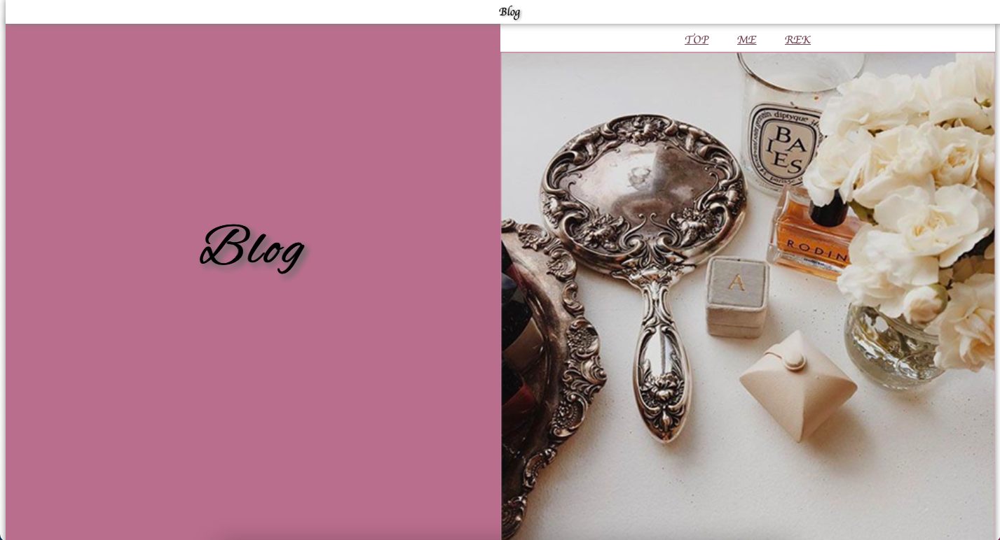

BLOG

作品について
説明：個人ブログサイト
作品URL：blog
制作期間：２週間
作業：デザイン・コーディング
作業環境：Photoshop・Dreamweaver
使用言語：HTML・CSS
制作意図
女の子の個人ブログという設定でWEBサイトを作成しました。SNSのフォロワーさんが見に来てくれるようなWEBサイトをイメージしました。個人的に作成したのでこちらのサイト単体では公開してません
意識したこと
・カラーの統一
・女の子らしさ
制作してみて
このサイトを作成した時は、まだWEBサイトの勉強を始めて３ヶ月くらいでしたが、レスポンシブは知らなかったので、今回そこら辺を再度手直ししてあります。
作成時に苦労したことは
・ブロック分けをして、左右にコンテンツが来るようにチャレンジしたところ
・見出しの最初に画像をつけたところ
・プロフィール画像に対して収まるようにプロフィールを書いたこと
です。わからないところは、検索をしたり、専門書を読んだりして解決しました。また、くすんだピンクを表現するのにカラーピッカーを使用して何度もやり直しました。端末によって色合いが違うことが不安ですが、理想の色合いになったと思います。